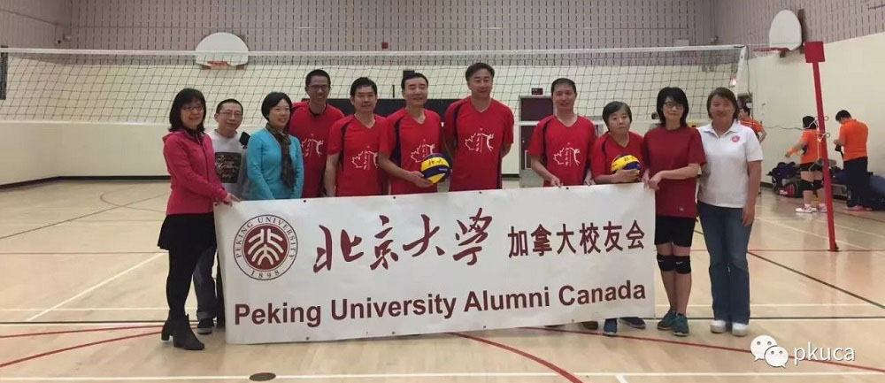
| 北大排球队勇夺亚军 - 第二届丁香杯高校排球赛 | pages: 239 of 1 |
|
四月 21, 2019
《最后一球》 这是【第二届丁香杯高校排球赛】上北京大学队对大连理工/大连海事大学联队的半决赛的最后一球。这是怎样的最后一球呢？下面就让我们来领略一下它的前世今生。 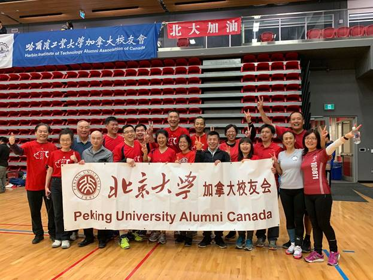 北大加油 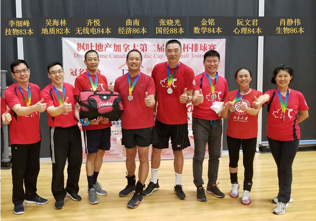 笑容映着奖牌 (球衣设计：队长吴海林) 这次披挂上阵代表北大出战的运动员是清一色60后，混两色花白发，人人年过半百，个个“老”而心坚，多人身负各种伤痛，然而带着对北大的挚爱，积极响应母校的召唤，在冰雪消融的四月天，飞的飞，奔的奔，从他乡远方，从四面八方齐聚由哈尔滨校友会组织筹办的多伦多丁香杯高校排球赛场—泛美运动中心。 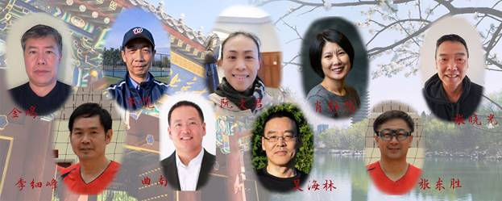 北大代表队运动员（海林制作） 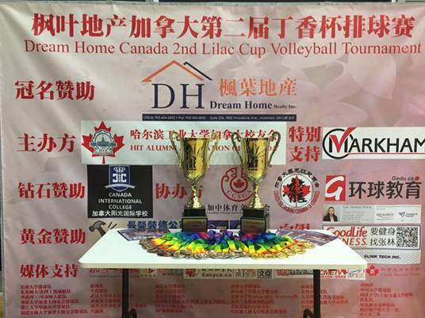 感谢哈尔滨工大精心主办枫叶地产丁香杯高校排球赛 他们身着“北大红”球衣，从晨曦到落日，拼搏奋战了一天半，共与12支代表各高校的球队进行了24局艰苦卓著的比赛，以仅失两局的战绩在两轮预赛后排名第三，直接晋级8强。又在之后8进4的淘汰赛上力克劲敌吉林队，顺利进入半决赛。 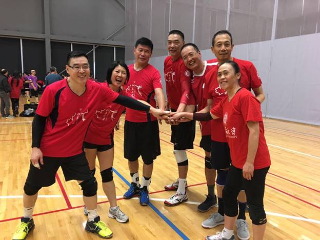 从左到右：吴海林，肖静伟，金鸣，张晓光，曲南，齐悦，阮文君 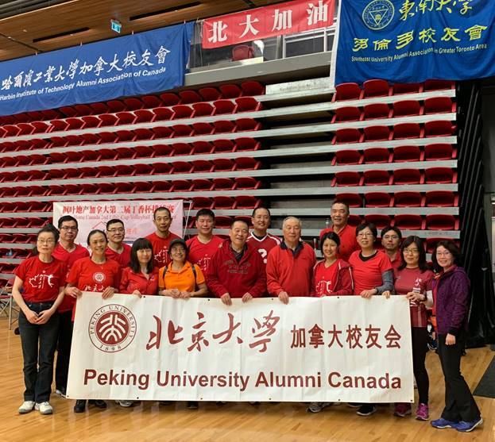 体力几乎消耗殆尽的“资深”北大队，面对的是年轻小将云集，实力技术超群的拥有强大阵容的上届亚军队大连理工代表队。只要排球之乡的台山队缺席，大连理工必是各种比赛的全场冠军。面对如此强大的对手，一路披荆斩棘奋勇向前的北大队员，心理上做了充分准备，但毫不惧怕，坦然面对。赛前，北大排球队前辈队员陈学工老师以细心的场外观察和对北大队员的优势了解，及自身的打球经验，与队员们一起做了“因地制宜”，“避实就虚”的技术战术指导及战略部署。 [Video305] - https://drive.google.com/open?id=1zTVFUw8drN7j0ytPychzLWopuZEzOSr7 陈老师与队员们切磋运筹 对手果然如传说中的强大，第一局就把北大队打了个措手不及，晕头转向，快速以21:11轻松拿下第一局。然而，北大全队上下（包括啦啦队）团结一致，互相鼓励，毫无气馁，抱着只要在场上就要拼搏到底的坚定信念，队员们吸取了教训，总结了经验，振作了精神，调整了队形，第二局发球旗开得胜，接着连续拿下几分，由之前的有点乱有空档变成了有章法有队形。对方紧追不舍，比分交替上升，北大队基本保持领先几分的优势，一度打出了一个小高潮，比分差距达到10:5，12:8。场内，运动员稳扎稳打，精诚合作，一分一分拼搏；场外，啦啦队高举手花，加油助威，一句一句鼓励。最终北大队以21:19扳回了宝贵的一局。令人惊喜连连！惊叹阵阵！全团人员内心重新燃起了希望之火，胜利之光就在前方灯火阑珊处！ 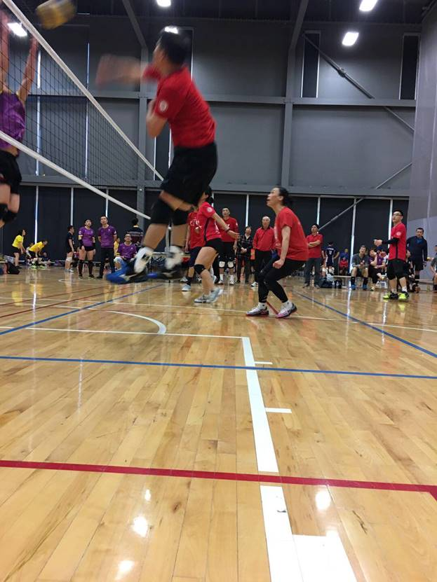 金鸣扣球 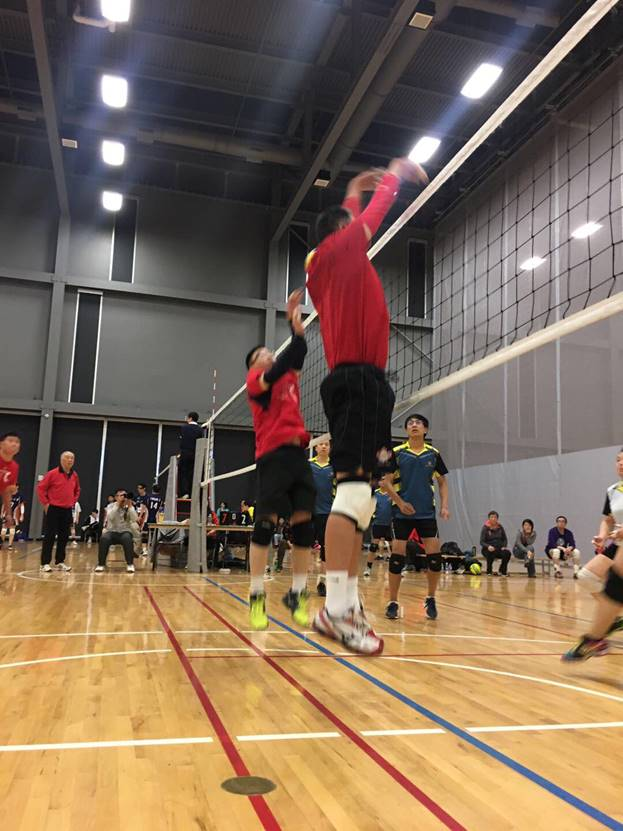 张晓光和吴海林双人拦网 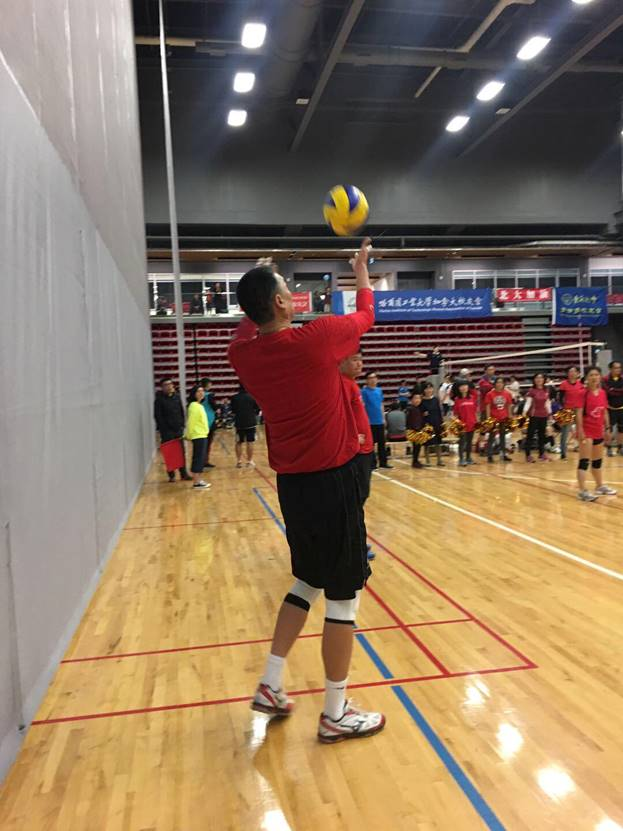 张晓光发球 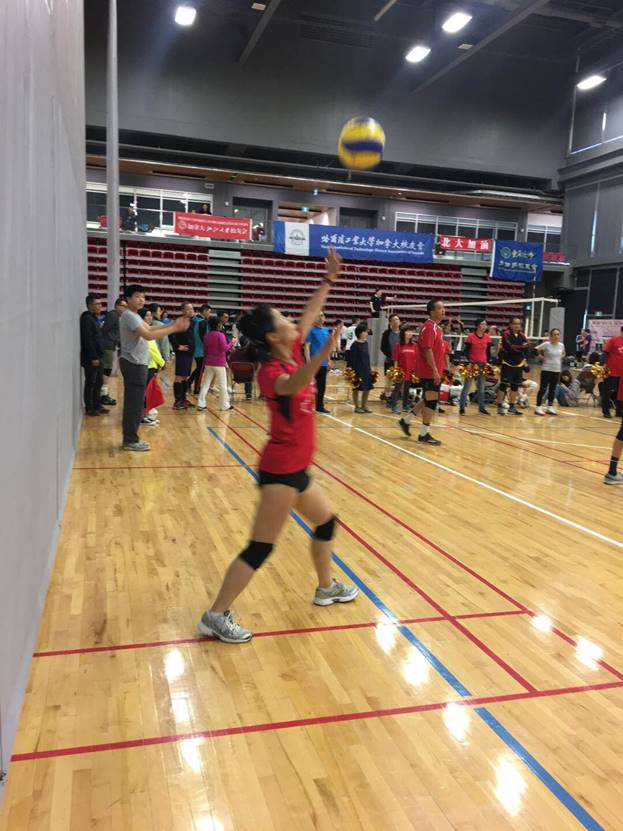 肖静伟发球 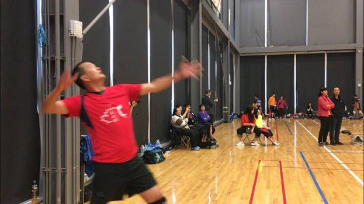 曲南发球 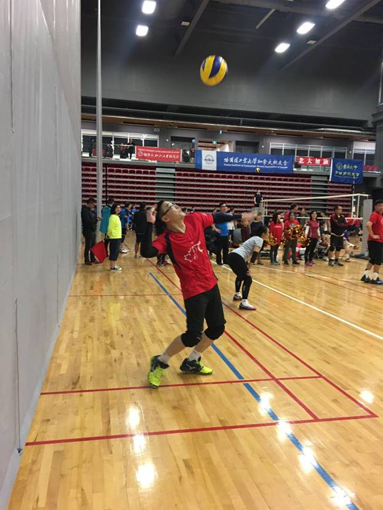 吴海林发球 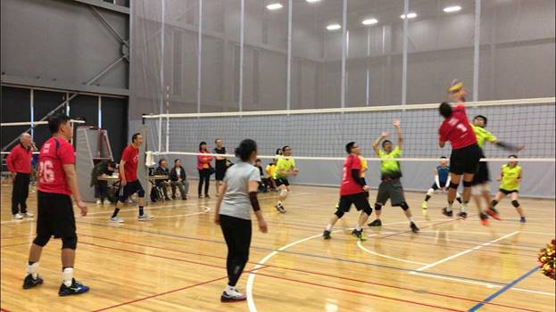 曲南扣球 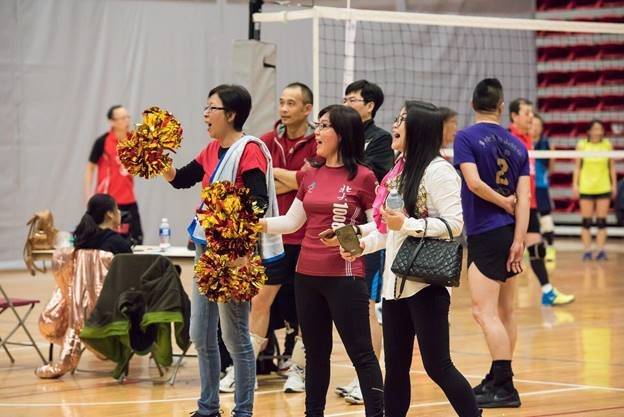 啦啦队靓丽风景线 成功逆转战局的北大队士气大振，队员意气风发，斗志昂扬，赛前激励会上，北大队定海神针（原北大校排球队队长）主攻曲南清晰有力地激励大家“我们一定要抱着必胜的信心、信念和决心，打好每一个球”。第三局决赛，按规则先到15分为胜出。一开局双方比分就紧咬，你争我夺，互不相让。在7:7时，北大队一个漂亮发球破坏了对方一传，小小排球在双方队员手中传接配合，你来我往，此起彼伏，上下翻飞，最终由于北大队“巨人”张晓光的拦网，对方队员试图从上从侧避开，结果把球扣出了界外。北大队得分，8:7交换场地。 [Video298] https://drive.google.com/file/d/11lZMyRpYvK_vIgUoAY1edtO17YBlrL7V/view?usp=sharing 接下来北大队情绪高涨，利用发球、快攻、扣球、拦网和对方失误，保持比分不相上下。双方各有超水平发挥，也各有失误。由于是争夺决赛权，比赛越往后越进入白热化，出现10平，11平，12平。战斗真是紧张激烈，难分难解！ 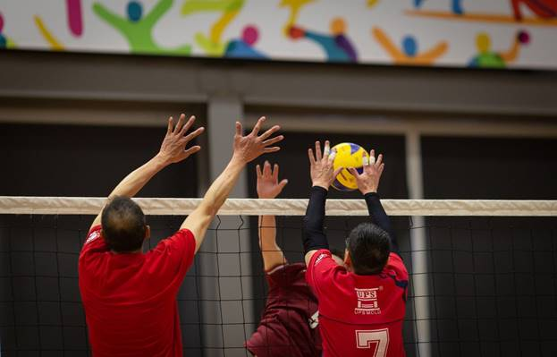 齐悦海林拦网 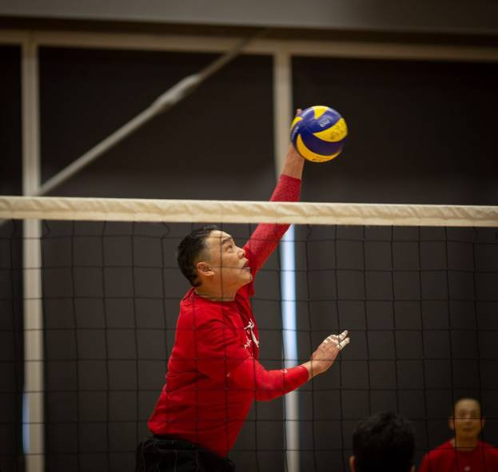 张晓光扣球 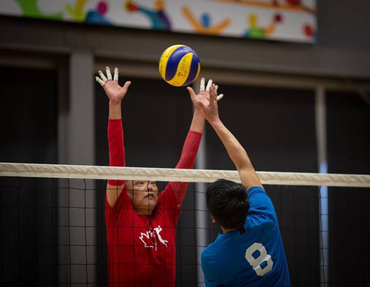 张晓光拦网 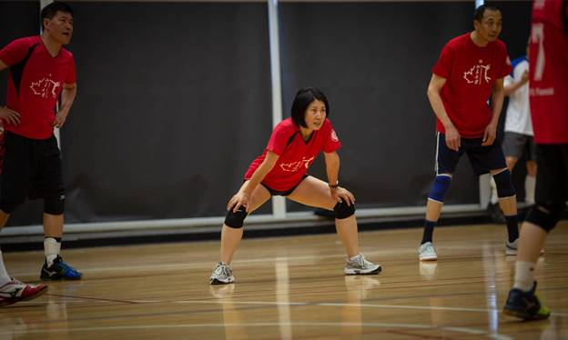 肖静伟标准优雅马步 J 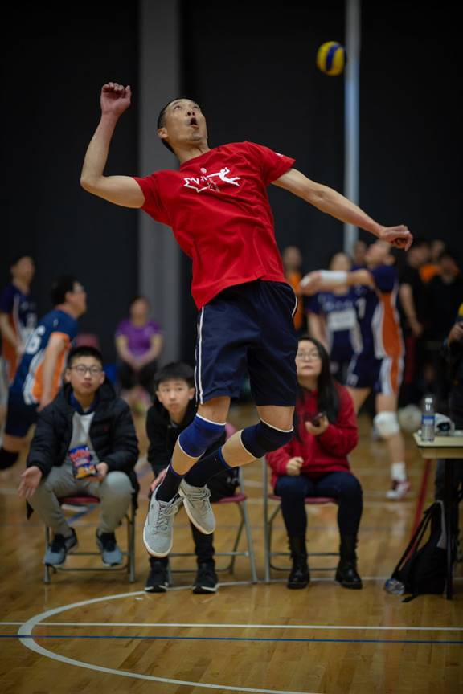 齐悦呼啸扣球 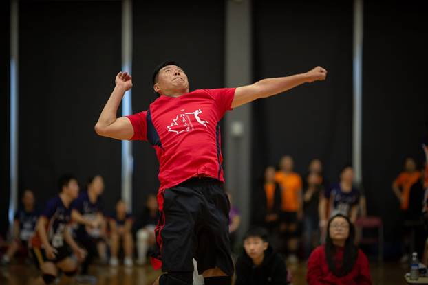 金铭奋力搏杀 当13平时，我队的一个失误，比分变成了13:14，对方发球且进入game point，千钧一发之时，我方巾帼女将肖静伟同学以标准优雅马步的预备姿势，一传接球自信到位，二传吴海林把球稳稳传给曲南，曲南扣球被对方阻挡回来，海林侧身轻轻一拨，把探头球吊死在对方空档场地，比分改写为最大数14:14。这关键一球使北大队起死回生，挽球命于悬崖。 [Video2] https://youtu.be/kAGq4JlsKoQ 倒数第二球海林拨球起死回生 14:14，扳平后的一球，对双方都是命悬一分一垂定音的致命一球。场上队员屏气凝神，压力山大，场下啦啦队员看得惊心动魄，呼吸不调 J 只见我队“高山队员”张晓光冷静沉着，稳如泰山的发球，连飘带转地飞过网，又重又沉外加刁钻地破坏了对方一传，使对方没能组织出有效的进攻，只能把球垫过网。机会来了，就看能不能抓住了。稳重成熟的主攻手金鸣同学稳稳当当接起了一传，老练的二传手海林同学托起一个漂亮二传，灵魂球手曲南同学高高跳起，大力挥臂，以标准专业的强攻扣杀之姿把球轻轻吊在对方空心之中，一个实虚结合的假动作迷惑了对方，做好了迎接大力扣杀的后沉准备，转势前扑，已是有心无时，来不及干着急，眼睁睁看着皮球落地。皮球落地的一瞬间，欢声雷动，掌声如潮，啦啦队员冲入场内，大家拥抱击掌，手舞足蹈，欢呼雀跃！尽情享受这凝聚了队员一路走来的汗水和拼搏，及全团人员团结协作，得来不易的喜悦时刻！ [Video3] https://youtu.be/k87jIzpVupI 最后一球曲南千金一吊锁定乾坤 这最后一球，扣人心弦，举重若轻，四两拨千斤，锁定决赛入场券的制胜一吊就是这样制造的。北大队奇迹般战胜了有不可阻挡之称的大连理工排球队。 致命的最后一球的完美制造，体现了全队的“艺高人胆大”。关键时刻从容不迫，危急时刻大胆出手，紧要关头方显身手！尽显荣耀！ 最后一球的背后，是中国女排精神+北大精神的综合体现！是水平、风格、拼搏、意志、素质、技术、战术、团队、奉献的全面体现！台上一分钟，台下十年功。运气和机会是给有准备之人准备的！ 场上一分秀，场下千万球。 汗水身上流，美妙心中留。 轻吊非重扣，最后一球牛！ 最后一球的前世今生，如果仅追溯到发球是远远不够的，只停留在半决赛第三局决胜局依然差得很远，要彻底追溯，至少得追溯到北大头上，一塔湖图里，青涩懵懂的芳华岁月中，孜孜以求、挥汗如雨、或徜徉漫步的身影。。。 久远的毕竟模糊迷离了，那咱就把镜头拉回到清晰的眼前。总结一下，参与打造最后一球华彩乐曲高潮的场内场外的校友英雄谱上都有哪些音符呢？ 《场上运动员英雄谱》 曲南，主攻。灵魂球手，领袖召集型。 金鸣，主攻。全能球手，稳重成熟型。 海林，二传。队长。手脚并用型 :-) 齐悦，副攻。高瘦球手，关键时发力型 晓光，副攻。巨人球手，高大发飘球型 静伟，接应二传。快速球手，姿态优美型 :-) 文君，自由人。灵活球手，保护着急型 :-) 细峰，替补。冷静球手，随叫随到型 :-) 《场下义工团员英雄谱》 不能不说，最后一球的诞生是整个团队的团结协作，点点滴滴，奉献浇灌结出的硕果。没有赞助者马健和Prim的慷慨资助，没有第一天Bowen资助并及时送到的热乎乎的包子午餐，没有第二天小平会长家里领导辛勤手工制作的香喷喷的包子午餐，没有义工后勤潘远翊的默默付出，没有李莉的全盘统筹,没有李皘给予的各种周到体贴的服务，没有左朝提供给两位主攻手第一天结束后恢复疲劳的理疗服务，没有邹老师的裁判留给运动员更多的休息恢复，没有陈老师细心的提醒和指导，没有啦啦队的靓丽加油（钟文，李皘，糖糖，刘英姿，孙岱钢，刘闯，左朝，吕增禄，方征宇，范云燕。。。），就没有它诞生的土壤和根基。 这动人的最后一球啊，你带来瞬间的喜悦，铸成永恒的瞬间！ 北京大学队最终荣获银牌 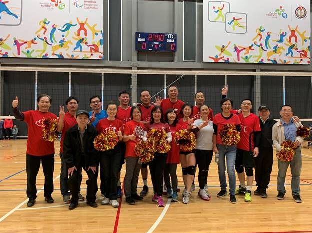 胜利的喜悦 感谢打造最后一球的全体北大官兵(包括在各个群里加油助威的你们) 李莉 (85计算机系) 2019-4-23 加拿大第二届丁香杯排球赛圆满收官 |
| 排球队活动 |
|
||
|
||
|